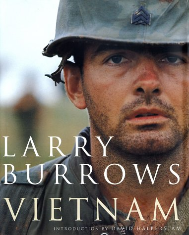

Les expositions
Exposition au Musée de la Photographie de Bruxelles
Description de l'exposition
« Larry Burrows: Viet-nam » vous sera présenté dans son intégralité au Musée de la Photographie de Bruxelles du au .
- Rue du Cirque 10, 1000 Bruxelles
- - de -
- Entrée à 9€
- Obtenir le catalogue de l'exposition